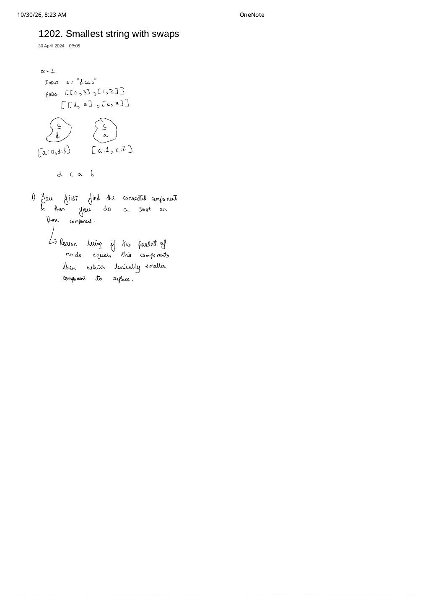

LC 1202: Smallest String With Swaps — Index Equivalence Classes & Why Components Must Be Sorted
Expanded from handwritten competitive coding study note: 07_1202_Smallest_string_with_swaps.pdf (dated April 30, 2024, 09:05 — written 23 minutes after Note 06!) · View original handwritten page
1. Problem Statement
You are given a string s of length $n$ ($1 \le n \le 10^5$) and an array of index pairs pairs where $\text{pairs}[i] = [a, b]$ ($0 \le a, b \lt n$) indicates that you may swap the characters at indices $a$ and $b$ any number of times. Return the lexicographically smallest string that s can be turned into after using the swaps.
2. The Handwritten "Aha!" Moment (23 Minutes After LC 1061)
Check the timestamps at the top of the two notebook pages: 06_1061 was written at 08:42, and 07_1202 was written right after at 09:05! That sequence explains the exact note written at the bottom of 07_1202:
"1) You first find the connected components & then you do a sort on those component. $\hookrightarrow$ Reason being if the parent of node equals this components then which lexically smaller component to replace."
Coming straight from LC 1061, it is super tempting to store the single smallest character at each DSU root. Why does that fail here? Because swapping permutes physical character tokens across positions—it conserves character counts rather than cloning characters! Once the smallest character in a component is placed at the earliest index of that component, it is used up; the second index in that component must receive the second-smallest character, and so on.
| Design Dimension | LC 1061 (Equivalent Characters) | LC 1202 (Swappable Indices) |
|---|---|---|
| DSU Node Domain | 26 alphabet letters 'a'..'z' |
$n$ string positions $0 \dots n - 1$ |
| Conservation Law | Unlimited copies (rewrite every char to class min) | Multiset of chars inside each component is strictly conserved |
| Post-DSU Step | ch = minChar[findPar(ch)] |
Collect chars per index component, sort ascending, place back in ascending index order |
3. Why Every Permutation Inside a Connected Component Is Reachable
Suppose indices $\{0, 2, 3\}$ are connected via swaps [0, 3] and [3, 2]. We weren't explicitly given a direct swap [0, 2]—so are we really allowed to place any permutation of $\{s[0], s[2], s[3]\}$ across $\{0, 2, 3\}$ without disturbing other components?
Transposition Generation Proof (Symmetric Group $S_k$)
Yes! Any indirect swap $(u\ w)$ along a 2-edge path $u - v - w$ is synthesized in three allowed swaps without moving $v$'s final character:
By induction along the unique path between any two vertices in a spanning tree of component $H$, we can synthesize any transposition $(x\ y)$ for $x, y \in V(H)$ while leaving all vertices outside $H$ untouched! Since every permutation decomposes into transpositions, the allowed swaps generate $S_{|H_1|} \times S_{|H_2|} \times \dots \times S_{|H_c|}$. Greedily assigning each component's sorted characters to its sorted indices is therefore both always reachable and globally optimal.
07_1202_Smallest_string_with_swaps.pdf: Indices group into {0, 3} and {1, 2}; sorting each component's characters independently produces "bacd".4. Brute $\to$ Standard Sort $\to$ Counting-Sort Optimization
| Approach | Time | Space | Key Insight |
|---|---|---|---|
| State-Space BFS on Strings | $\mathcal{O}(n! \cdot m \cdot n)$ | $\mathcal{O}(n! \cdot n)$ | Explores permutations explicitly; intractable beyond $n \approx 10$. |
| DFS/BFS + Per-Component Sort | $\mathcal{O}(n \log n + m)$ | $\mathcal{O}(n + m)$ | Requires building $\mathcal{O}(n + m)$ adjacency lists first. |
| Index DSU + Automatic Sorted Indices | $\mathcal{O}(m \cdot \alpha(n) + n \log n)$ | $\mathcal{O}(n)$ | Zero adjacency-list memory! Iterating $i = 0 \dots n - 1$ collects each component's indices in already sorted order, so only the characters need sorting! |
5. Clean C++ & Python Implementations
Notice a neat implementation trick in both languages: because we scan $i$ from $0$ to $n - 1$ when grouping positions by findPar(i), every vector groups[root] is automatically in strictly ascending index order—we never need to call sort on the indices, only on the extracted characters!
#include <bits/stdc++.h>
using namespace std;
class Solution {
public:
string smallestStringWithSwaps(string s, vector<vector<int>>& pairs) {
int n = s.size();
vector<int> parent(n), sz(n, 1);
iota(parent.begin(), parent.end(), 0);
auto findPar = [&](auto& self, int x) -> int {
return parent[x] == x ? x : parent[x] = self(self, parent[x]);
};
for (const auto& p : pairs) {
int r1 = findPar(findPar, p[0]);
int r2 = findPar(findPar, p[1]);
if (r1 != r2) {
if (sz[r1] < sz[r2]) swap(r1, r2);
parent[r2] = r1;
sz[r1] += sz[r2];
}
}
// Group indices by component root (indices arrive naturally sorted 0..n-1!)
vector<vector<int>> groups(n);
for (int i = 0; i < n; ++i) {
groups[findPar(findPar, i)].push_back(i);
}
string res = s;
string chars;
for (int r = 0; r < n; ++r) {
if (groups[r].size() <= 1) continue; // Singleton indices stay unchanged
chars.clear();
chars.reserve(groups[r].size());
for (int idx : groups[r]) chars.push_back(s[idx]);
sort(chars.begin(), chars.end());
for (size_t k = 0; k < groups[r].size(); ++k) {
res[groups[r][k]] = chars[k];
}
}
return res;
}
};from collections import defaultdict
class Solution:
def smallestStringWithSwaps(self, s: str, pairs: list[list[int]]) -> str:
n = len(s)
parent = list(range(n))
size = [1] * n
def find(x: int) -> int:
while parent[x] != x:
parent[x] = parent[parent[x]]
x = parent[x]
return x
for u, v in pairs:
ru, rv = find(u), find(v)
if ru != rv:
if size[ru] < size[rv]:
ru, rv = rv, ru
parent[rv] = ru
size[ru] += size[rv]
groups: dict[int, list[int]] = defaultdict(list)
for i in range(n):
groups[find(i)].append(i)
res = list(s)
for idxs in groups.values():
if len(idxs) <= 1:
continue
sorted_chars = sorted(s[i] for i in idxs)
for idx, ch in zip(idxs, sorted_chars):
res[idx] = ch
return "".join(res)6. Complexity Proof & Key Edge Cases
- Time Complexity — $\mathcal{O}(m \cdot \alpha(n) + n \log n)$: Unioning $m$ pairs takes $\mathcal{O}(m \cdot \alpha(n))$. If component sizes are $k_1, k_2, \dots, k_c$ with $\sum k_j = n$, sorting characters across all components costs $\sum k_j \log k_j \le \sum k_j \log n = n \log n$. (And since characters are lowercase
'a'..'z', replacingsortwith a 26-bucket frequency count drops sorting to $\mathcal{O}(26n)$ if desired!) - Space Complexity — $\mathcal{O}(n)$: Note that using DSU instead of DFS avoids storing all $m$ edges in an adjacency list—critical when $m \gg n$ (e.g., dense duplicate swap pairs)!
- Key Edge Cases:
pairsis empty: Every group has size $1$, skipped in $\mathcal{O}(1)$ viagroups[r].size() <= 1, returningsuntouched.- Self-swaps
[i, i]and duplicate pairs[u, v], [v, u]: Ignored cleanly byif (r1 != r2).
From the Handwritten Notes
View original handwritten page — 07_1202_Smallest_string_with_swaps.pdf (Connected index components & why sorting is required)


07_1202_Smallest_string_with_swaps.pdf (30 April 2024, 09:05): Tracing s = "dcab" with [[0, 3], [1, 2]] and explaining why connected components must be sorted rather than mapped to a single root character.